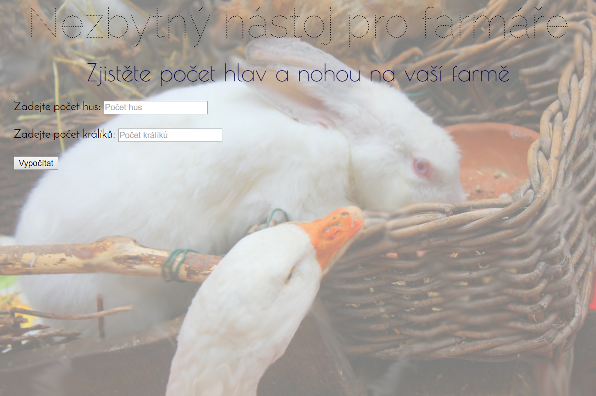

Úkol z lekce 4
Husy a Králíci
Úkolem je naprogramovat starou známou aplikaci na evidenci hus a králíků a výpočet jejich hlav a nohou.
Demo úkolu můžete vidět zde: https://koala.tomcat.cloud/ukol04
Vytvořte jsp šablonu s formulářem, ve kterém budou 2 textová pole pro zadání počtu hus a králíků a tlačítko pro odeslání (type="submit"). Formuláře nezapomeňte odeslat pomocí metody post, kterou použijete také v @RequestMapping v HlavnímControlleru - přesně jako jsme to dělali na hodině. Po klinutí na odeslat farmář ihned uvidí, jak na tom je. Zkuste demo ;-)
A kdo chce vyhrát zlatého Bludišťáka, může zavzpomínat na hardcore verzi s množením ;-) (2016-podzim/java1/ukol03.html)
Poznámky
Připravili jsme pro vás novou předlohu pro nové projekty - najdete ji v menu: Studijní materiály -> Předloha pro aplikaci. Můžete ji použít již pro tento úkol. Budete-li chtít změnit pozadí, vyměňte pouze obrázek ve složce images. POZOR zachovejte stejný název obrázku s pozadím - background.png!